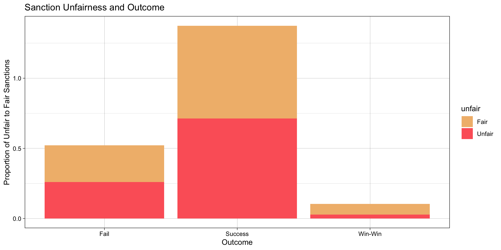

My final project
Steven Pinker argued that the world is currently in the most peaceful era of human history.1 A neo-liberal view of the international system we currently enjoy would support him and claim that cooperation and non-violence is the norm as nation-states have more interwoven interests that raises the cost of war to prohibitive levels. A realist, however, would disagree and see the anarchy of international disorder simply change its form – from kinetic warfare to economic warfare, from gunpowder to the dollar. I am interested in seeing whether it is true that the methods of conflict had simply transformed itself with the rules permitted by the neo-liberal international system, or whether the international system had in fact substantively changed its predisposition for peace.
The use of international sanctions will be treated as a potential weapon during peacetime. I have downloaded data here https://dataverse.harvard.edu/dataset.xhtml?persistentId=doi:10.7910/DVN/SVR5W7 2. In addition, I have merged it with additional datasets about military power from https://correlatesofwar.org/data-sets/cow-war/ 3 as well as GDP data about the target and sender countries from https://data.worldbank.org/indicator/NY.GDP.MKTP.CD 4.
library(readxl)
sanction <- read_excel("~/Desktop/dataverse_files/IST_JPR_Attia&Grauvogel.xlsx")
library(tidyverse)
data_sanction <- sanction|>
select(-sender, -target, -startdate, -terdate, -defactoter, -ongoing, -gradual, -datasets, -sourceimp, - sourceter, -instinvestment, -comment, -goals, -costsender)
data_sanction <- data_sanction |>
mutate(expiry = case_when(expiry == 0 ~ "no expiry",
expiry == 1 ~ "will expire"),
review = case_when(review == 0 ~ "no review",
review == 1 ~ "specific temporal review"),
adaptgoal = case_when(adaptgoal == 0 ~ "no change",
adaptgoal == 1 ~ "adjusted goal"),
negotiations = case_when(negotiations == 0 ~ "no negotiations",
negotiations == 1 ~ "negotiated"),
salience = case_when(targetsalience < sendersalience ~ "assymetric stakes",
targetsalience == sendersalience~ "equal stakes",
targetsalience > sendersalience~ "self-defence stakes"),
costtarget = case_when(costtarget == "Major" | costtarget == "Severe" ~ "Economically Damaging",
costtarget == "Minor" ~ "Minor damages"),
unfair = if_else(review == "no review" & adaptgoal == "adjusted goal" & expiry == "no expiry", "Unfair",
if_else(review == "no review" & adaptgoal == "adjusted goal" & negotiations == "no negotiations", "Unfair",
if_else(review == "no review" & expiry == "no expiry" & negotiations == "no negotiations", "Unfair",
if_else(negotiations == "no negotiations" & adaptgoal == "adjusted goal" & expiry == "no expiry", "Unfair",
"Fair" )))),
sender = str_split(caseid, "_", simplify = TRUE)[, 1],
target = str_split(caseid, "_", simplify = TRUE)[, 2],
year = str_split(caseid, "_", simplify = TRUE)[, 3],
year = as.numeric(year),
year = if_else(year >= 48, year + 1900, year + 2000)
)
data_sanction <- data_sanction |>
mutate_all(~ifelse(. %in% c("Blank"), NA, .)) |>
na.omit() |>
mutate_all(~ifelse(. %in% c("missing"), NA, .)) |>
na.omit() |>
drop_na() |>
mutate(outcome = case_when(outcome == "Sender capitulation" ~ "Fail",
outcome == "Stalemate" ~ "Fail",
outcome == "Target complete acquiescence" ~ "Success",
outcome == "Target partial acquiescence" ~ "Success",
grepl("Negotiated settlement", outcome) ~ "Win-Win" )) # success defined as sender obtains goals through target partial or complete acquiescence (win-lose), failure defined as sender capitulating to target or target obtaining stalemate (lose-win or lose-lose), win-win defined as negotiated settlement
# Joining Military Data
library(haven)
cow <- read_dta("~/Downloads/NMC_Supplement_v4_0.dta") |>
select(stateabb, year, milex, milper)
cow_sender <- cow |>
rename(sender = stateabb,
military_expense = milex,
military_personnel = milper) |>
mutate(military_personnel = military_personnel *1000)
cow_target <- cow |>
rename(target = stateabb,
military_expense = milex,
military_personnel = milper) |>
mutate(military_personnel = military_personnel *1000)
data_sanction <- data_sanction |>
left_join(cow_sender, by = c("sender", "year")) |>
left_join(cow_target, by = c("target", "year")) |>
rename( "Mil_ex_Sender" = "military_expense.x" ,
"Mil_per_Sender" = "military_personnel.x",
"Mil_ex_Target" = "military_expense.y",
"Mil_per_Target" = "military_personnel.y" )
# Joining GDP data
gdp <- read_csv("~/Desktop/API_NY.GDP.MKTP.CD_DS2_en_csv_v2_6011335.csv", show_col_types = FALSE, skip = 4) |>
pivot_longer(cols = `1960`:`2022`, names_to = "year", values_to = "gdp") |>
select(`Country Code`, year, gdp) |>
filter(!is.na(gdp)) |>
mutate(across(.fns = as.character)) |>
type_convert()
gdp_sender <- gdp |>
rename(sender = `Country Code`) |>
mutate(gdp_in_mils= `gdp`/1000000) |>
select(-gdp)
gdp_target <- gdp |>
rename(target = `Country Code`)|>
mutate(gdp_in_mils = `gdp`/1000000) |>
select(-gdp)
data_sanction <- data_sanction |>
left_join(gdp_sender, by = c("sender", "year")) |>
left_join(gdp_target, by = c("target", "year")) |>
rename( "GDP of Sender (mils)" = "gdp_in_mils.x" ,
"GDP of Target (mils)" = "gdp_in_mils.y")
data_sanction <- data_sanction |>
mutate(mil_coerc = case_when(Mil_ex_Target/Mil_ex_Sender < 0.05 ~ "Overwhelming military superiority",
Mil_ex_Target/Mil_ex_Sender >= 0.05 | Mil_ex_Target/Mil_ex_Target < 0.8 ~ "Military superiority",
Mil_ex_Target/Mil_ex_Sender >= 0.8 ~ "Baseline inequality"),
econ_power = case_when(`GDP of Target (mils)`/`GDP of Sender (mils)` < 0.05 ~ "Sender significantly richer",
`GDP of Target (mils)`/`GDP of Sender (mils)` >= 0.05 | `GDP of Target (mils)`/`GDP of Sender (mils)` < 0.5 ~ "Sender slightly richer",
`GDP of Target (mils)`/`GDP of Sender (mils)` >= 0.5 ~ "Baseline inequality"))A few defining parameters:
Success is defined from the perspective of the sender, as sender obtains goals through target partial or complete acquiescence (win-lose), fail is defined as sender capitulating to target or target obtaining stalemate (lose-win or lose-lose), win-win defined as negotiated settlement for both target and sender. However, when applied in the linear regression analysis, it will be simplified into simply 1 (success and win-win) or 0 (fail) for ease of calculating directionality of coefficient value.
Unfair is defined as failing 3 of 4 design parameters for the sanction terms of either no review date for sanctions, no negotiations initiated, no expiry date, or a sender change of goals. These are terms that, when taken together, indicate a lack of interest in engaging with the issue that inspired the sanction and a lack of intention to end the sanction upon successful enforcement of sanction terms. This definition is built based on the theory from Mulder, where sanction becomes a means as an economic weapons when it resembles a blockade rather than a negotiation. It is thus a means to the end of economic punishment of the target rather than disciplining recalcitrant actors into the world order.5
Finally, a note on the definition of mil_coerc and econ_power’s boundaries. The range to qualify the relationship between the sender and target uses somewhat arbitrary proportions to delineate “overwhelming military superiority†from “military superiority†and so forth. This is because most of the data is between US and a target nation, and in all cases the disparity between military expenditure and GDP between the two is too wide to be meaningful categorisation. Unequal power is the baseline, so the boundaries of 0.05, 0.8 and 0.5 for each tier of disparity is somewhat arbitrarily drawn to manage the data differentiation.

| Clarity of Goal | outcome | proportion |
|---|---|---|
| Ambiguous | Fail | 0.3000000 |
| Ambiguous | Success | 0.6000000 |
| Ambiguous | Win-Win | 0.1000000 |
| Clear | Fail | 0.2500000 |
| Clear | Success | 0.6954545 |
| Clear | Win-Win | 0.0545455 |
When looking at the graph of Sanction Goal Clarity and Outcome, it shows that the distribution of outcomes remains proportional for both ambiguous and clear terms of sanction. Furthermore, the table for sanction goal clarity and outcome shows that the proportion of fail:success:win-win is similar for ambiguous and clear sanction terms.
In addition, the graph for the Sanction Unfairness and Outcome shows that majority of the sanctions were fairly designed at least with the definition of fairness above. The proportion of fair and unfair sanction design also remains consistent within each outcome, showing that there is an external factor that is affecting the outcome. Taken together, the goal clarity and unfairness eliminates sanction designs itself as explanation for the differences in sanction outcome. Therefore, it points to the fact that the dynamic between the sender and target is exerting pressures on sanction outcomes.
When looking at the graph of sanction senders and their outcomes, the sanction senders proportion clearly highlights the dominance of US initiated sanctions compared to the international organisations. This is one indication of potentially abuse of sanctions based on economic power. The US initiated sanctions have a much lower probability of success – a greater distribution goes to failures and win-wins. While the majority of senders are multilateral actions taken by international actors, the majority of sanctions sent are initiated by the USA.In addition, the US contributed to the most number of failed or win-win sanctions that are disproportionate to almost every other organisation. Therefore, there is indication that something is motivating in higher volume but lower success sanctions initiated by the US.
This graph breaks down the unfairness of of sanction design according to senders. Interestingly, USA, EU and UN which have slightly more fair than unfair sanctions tended to be the ones which yielded the most unsuccessful sanction outcomes when compared to the previous graph. The EEC, on the other hand, with a high percentage of unfair sanction designs, managed to be relatively successful.
Finally, these two graphs show the effects of two potential external pressures that affect the outcome of the sanction. The effects of GDP disparity highlights how being significantly richer does not affect the success or failure of a sanction, but the smaller disparity overwhelmingly affects the win-win outcomes. This points to how a slightly more evenly matched economy might choose to seek negotiations and concessions.
The effects of military expenditure graph shows a really interesting parallel as well, where the win-win outcomes are disproportionately higher when the disparity in military superiority as measured by expenditure is smaller. The other noticeable difference is that having overwhelming military superiority still has a high percentage of failures. No failure of sanction outcome is a result of spending too little on the military. This is telling – one does not require as much military spending and use of force to back up a sanction’s outcome.
From some of the preliminary comments made above, there are a few things that the data is showing. Firstly, sanction design has minimal impact on the sanction outcome. The fairness of its terms and goal clarity has minimal effects on the possibility of a successful sanction in achieving the desired effects of getting a target nation to fall in line to a world order. If this could be validated through other data analysis, this would mean that preserving peace in a neo-liberal world order does not require one to agonise over processes like peacekeeping negotiations and sanction design. There are more effective levers that affect sanction outcome.
Secondly, US is the sole contribute to unilateral sanctions, and proportionally also contributes the most to unfair sanctions taken against target countries. This in itself is a sign that sanctioning is a monopolised weapon that the US readily uses. Unilateral actions are usually unfairly imposing attrition and damage to target countries, which itself is a form of aggression. 6 In addition, the analysis on the GDP and military expenditure data of these unilateral actions of US against target nations reveal that most times the US possesses an overwhelming military and economic advantage – most of the target nations barely reach 5% of the proportion US spends. Coupled with the fact that the US is the only unilateral actor responsible for a disproportionate amount of sanctions – and unsuccessful sanctions too – shows that sanctions has become an ineffective tool to safeguard international order.
Lastly, sanction outcomes that are constructive and beneficial to both target and sender are usually achieved with a reduced economic and military disparity. Win-win outcomes of sanctions are desirable because the sender is able to enforce international order and use sanctions as a peaceful method to keep the target nation in line, without neutralising the target’s own interests. This creates a more participatory world order built upon consensus and agreements rather than punishment. Being superior in terms of GDP and military expenditure does not guarantee sanction success or predict sanction failure, therefore the best middleground is to opt for a win-win.
| Â (1) | |
|---|---|
| (Intercept) | 1.600 |
| s.e. = 0.407 | |
| p = <0.001 | |
| costtargetMinor damages | −0.011 |
| s.e. = 0.182 | |
| p = 0.953 | |
| salienceequal stakes | −0.473 |
| s.e. = 0.198 | |
| p = 0.020 | |
| salienceself-defence stakes | −0.072 |
| s.e. = 0.230 | |
| p = 0.754 | |
| mil_coercOverwhelming military superiority | −0.636 |
| s.e. = 0.336 | |
| p = 0.064 | |
| econ_powerSender slightly richer | −0.364 |
| s.e. = 0.336 | |
| p = 0.284 | |
| Num.Obs. | 59 |
| R2 | 0.231 |
| R2 Adj. | 0.158 |
The linear regression model reveals 3 important validations to the analysis above. Firstly, the relatively minor economic damages target nations incur are negatively related to the outcome of the sanction. The coefficient of the costtarget being minor damages is -0.011, or put another way, 1% more economic damage inflicted creates 1.1% increase in success of sanction outcomes. This seems to track with the result of other studies that shows that sanctions are most effective when the issues are more salient for the target, or when it is equally important to them.7. Thus, sanction effectiveness does rely on punitive effects, which shows that sanctioning can be aggressive, and relies on inflicting more than minor damages to achieve success. The p-value is 1-0.953 = 0.047, which is < 0.05. As such, the null hypothesis can be safely rejected if alpha = 0.05, and thus there is statistical significance.
Secondly, having equal states on the salience of the sanctioned issue is negatively correlated with the success of a sanction outcome. The coefficient of -0.473 means that having the target and sender nation be both invested in the sanctioned issue by 1% causes a 4.7% decrease in sanction success. Equal issue salience creates incentive to maintain national interest rather than work towards concessions or accordance to international order. Thus, it tracks that sanctions over vigorously contested issues tend to be less effective, and perhaps should dissuade nations from using sanctions as a means to further their interest. The p-value is 0.02, which means the null hypothesis could be rejected if alpha = 0.05, which validates the statistical significance of issue salience on sanction outcome.
Lastly and most significantly, having overwhelming military superiority contributes to a -0.636 coefficient. This means overwhelmingly outspending the target country by 1% diminishes sanction success by 6.4%. Despite the p value being 0.064, which is slightly more than alpha = 0.05, it is still less than alpha = 0.1. With reiterative data analysis projects this could be validated, but this is still statistically significant. It explains why unilateral action by the US contributes to disproportionate failures in sanction outcomes – barely any country is in competition for how much the US is spending on the military. This is strong evidence that coercive force and the threat of military superiority weighs upon the successes of sanctions and impedes the maintenance of international order.
As such, the linear regression analysis reveals that sanctions are inherently aggressive and threat of violence and fierce contestation are detrimental to the maintenance of a peaceful neo-liberal world system. The economic damages, issue salience, and military expenditure superiority are statistically significant variables that affect the success of sanctions.
Through this anlysis, I would argue that Steven Pinker is slightly wrong about characterising the world peace – the aggression has simply shifted into other less visible areas such as sanctions. Sanctions would be seen as more neutral means of policing a peaceful world order if it does not inherently rely on domination and the threat of aggression, as well as the potential for protracted economic damage and attrition. However, I would like to acknowledge the various shortcomings of this data analysis. Assessing sanctions and its potential abuse as an economic weapon is difficult because of the inherent skew in the data available. Sanctions are almost unilaterally directed by the USA as the global hegemon, which means that there may be many confounding variables that this analysis has not eliminated. Diplomatic allies, US’ role in the UNSC and exercise of veto powers, and the potential for military aid concurrent to the sanctions are all variables that could have affected the sanction outcome. There are also less data from multilateral sources than ideal for it reduces the agency of international organisations as guardians of a neo-liberal world order. With more time and money, I would pursue the research specifically in two areas: whether the types of sanction actions pursued affected the outcome, and how the target nations responded. This would provide a more discriminate and precise diagnosis of how sanctions can enforce or undermine the peaceful world order, and places the analysis on the actions of the belligerent nation, which is ultimately a decisive actor in the effectiveness of a sanction’s desired outcome.
Pinker, Steven, The Better Angels of Our Nature: Why Violence Has Declined. , 2011.↩︎
Attia, Hana; Julia Grauvogel, 2022, “International Sanctions Termination Dataset”, https://doi.org/10.7910/DVN/SVR5W7, Harvard Dataverse, V1↩︎
Sarkees, Meredith Reid and Frank Wayman (2010). Resort to War: 1816 – 2007. Washington DC: CQ Press.↩︎
GDP in current USD, World Bank national accounts data, and OECD National Accounts data files, NY.GDP.MKTP.CD, World Bank Group Archives, Washington, D.C., United States.↩︎
Mulder, Nicholas, 2022. The Economic Weapon: The Rise of Sanctions As a Tool of Modern War. New Haven: Yale University Press.↩︎
Fakhri, Michael. “Situating Unilateral Coercive Measures within a Broader Understanding of Systemic Violence.†Yale Journal of International Law, June 22, 2023. https://www.yjil.yale.edu/situating-unilateral-coercive-measures-within-a-broader-understanding-of-systemic-violence/.↩︎
Hausmann, R., Schetter, U. & Yildirim, M.A., 2022. On the Design of Effective Sanctions: The Case of Bans on Exports to Russia. Copy at http://www.tinyurl.com/26vcvz9v↩︎